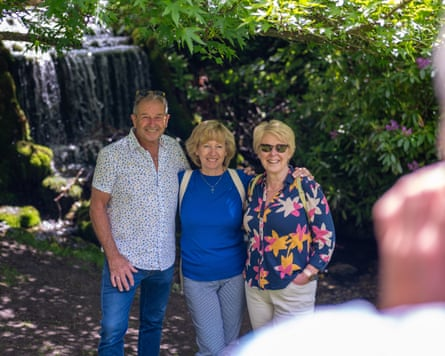
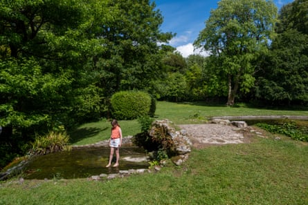

For decades the lake and waterfall on the Bridehead Estate in Dorset have brought joy to visitors who used the permissive path to access a scene of pastoral loveliness that could have come straight from the pages of a Thomas Hardy novel.
But there was melancholy – and anger – among the hundreds, possibly thousands, who made final pilgrimages to the village of Littlebredy this week after it was announced that public access was being halted from 2 June.
“Coming here is like going back in time to the 1950s or 60s when life was much easier and simpler,” said Caroline Lewis, from Weymouth, a retired civil servant and teacher who has been visiting for half a century.
“It’s beautiful and peaceful. I have lots of happy, peaceful memories here. It’s serene and soothing, and it seems selfish to close it off.”
Landscape photographer Rachel Baker has been visiting for 10 years. “I first stumbled on it when we did a day trip to west Dorset and stopped off in Littlebredy on our way home. It was such a beautiful, tranquil spot with hardly a human in sight.
“The waterfall is particularly stunning at autumn as it is framed by a Japanese maple, and the leaves go from golden yellow to a deep red. It became a bit of a pilgrimage to visit and photograph the waterfall every autumn.
“It feels a tremendous shame that the access that has been given to the public for so many years is being taken away.”
People on their last pilgrimage to Bridehead Estate lake and waterfall.Photograph: Jim Wileman/The Guardian
Kevan Manwaring, a university lecturer in creative writing, said it was culturally important. Hardy knew this area well, thus one of the main characters in his novel Jude the Obscure was named Sue Bridehead.
The artist David Inshaw painted the cricket pitch on the estate in the 1970s and, more recently, the waterfall was used as a setting for a crime scene in the television show Broadchurch.
Manwaring said: “We should be encouraging people to spend more time in nature, not less.”
The history of the estate stretches back centuries. According to an information notice in the village church, St Michael and All Saints , the “bredy” in “Littlebredy” comes from a Celtic word meaning to throb or boil, thought to be a reference to the stream.
For more than 400 years, the estate was owned by Cerne Abbey until the dissolution and at the end of the 18th century, it was bought by Robert Williams, whose family grew rich from furniture making, banking – and a stake in the East India Company.
The stream was dammed to create Bridehead Lake. Acer, tulip trees and pines were planted and at the western end of the lake, and water spilled out into the mossy waterfall.
The house and estate were passed down through the Williams family and villagers and visitors were given access to the lake and waterfall in exchange for a donation to the village church. Over the years, people have scattered ashes of loved ones – and pets – at the site.
The ‘bredy’ in ‘Littlebredy’ comes from a Celtic word meaning to throb or boil, thought to be a reference to the Bridehead estate stream.Photograph: Jim Wileman/The Guardian
Last year the 16-bedroom house and 2,000-acre estate came on to the market with a guide price of £30m. Country Life described it as a “joyous home, full of surprises” .
The house and estate is believed to have sold quickly. The identity of the new owner has not emerged but a notice saying that “permissive access will be withdrawn as of Monday 2 June 2025” appeared on a fence beside the path.
The Right to Roam campaign has said it will challenge and “defy” the ban.
Nadia Shaikh, from the campaign, said: “Bridehead’s beauty and tranquillity should continue to be accessible to all, not locked away behind estate gates. This landscape is more than just scenery – it’s part of the cultural and natural heritage of Dorset, intertwined with local identity and community life.
“This closure epitomises the precarious nature of public access to the countryside across England . It is part of a growing trend of micro-enclosures and the paywalling of the countryside. The government urgently needs to pass new legislation to protect access to places like Bridehead and extend access to the countryside elsewhere.”
Shaikh said the estate’s history was “deeply tied to colonial exploitation” through the East India Company, adding: “Maintaining public access is a positive step toward accountability, community healing, and celebrating a more inclusive, shared heritage.”